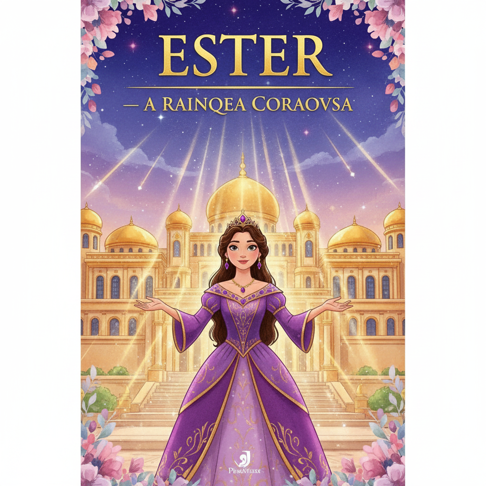

Coragem, Fé e Salvação — Um Resumo Visual para Crianças
Ester era uma jovem simples e judia,
Orphan, criada por Mardoqueu todo dia.
Mas Deus tinha um plano que ela mal sabia —
Ela seria rainha para salvar o povo da agonia!
✨ Não importa sua origem ou família,
Deus pode te colocar exatamente onde precisaria.
"Para um momento como este" você está aí —
Pergunte a Deus: "Qual é o meu propósito aqui?"
Entrar no rei sem ser chamada — morte certa!
Mas Ester disse: "Se perecer, perecerei" — alerta!
Ela jejuou 3 dias e foi com fé que converta,
E Deus abriu o coração do rei — vitória aberta!
🦁 Coragem não é ausência de medo,
É agir pela fé mesmo com o coração em segredo.
Quando Deus te chama para algo difícil e sério,
Ele vai adiante de você abrindo o caminho inteiro!
O nome de Deus não aparece aqui nenhuma vez!
Mas a mão Dele fica clara — olha que proeza!
Coincidências demais, cada detalhe no lugar,
Só pode ser Deus tudo a orquestrar!
🌈 Mesmo quando Deus parece ausente da cena,
Ele está nos bastidores — nada Ele abandona ou pena.
Cada detalhe da sua vida está em Suas mãos,
Confie — Ele escreve histórias maiores que as nossas razões!
📘 Moral da história:
Você está onde está por um propósito —
seja corajoso, Deus está no controle de tudo isso! 💜
A jovem judia órfã que se tornou rainha da Pérsia e, com coragem e fé, arriscou a vida para salvar seu povo do extermínio.
O primo sábio que criou Ester como filha, se recusou a se curvar a Hamã e foi o estrategista por trás da salvação do povo judeu.
O ministro cheio de orgulho que tramou o extermínio de todos os judeus — mas acabou caindo na armadilha que ele mesmo armou para Mardoqueu.
"E o rei amou a Ester mais do que a todas as outras mulheres, e ela obteve graça e favor diante dele mais do que todas as outras virgens; assim ele lhe pôs na cabeça a coroa real."
— Ester 2:17
Ester não revelou que era judia ao entrar no palácio — Mardoqueu a instruiu a guardar segredo. Deus às vezes prepara pessoas em silêncio, longe dos holofotes, para o momento certo.
Mardoqueu ficava todo dia no portão do palácio para saber como Ester estava. Certa vez ouviu um plano de assassinato contra o rei e o denunciou — um ato que Deus usaria mais tarde de forma surpreendente!
"E Hamã disse ao rei Assuero: 'Há um povo espalhado e disperso entre os povos de todas as províncias do teu reino, cujas leis são diferentes das de todos os outros povos.'"
— Ester 3:8
Hamã jogou sortes — chamadas "pur" — para escolher o dia do extermínio dos judeus. O resultado? O 13º dia do 12º mês. Deus deu ao povo quase um ano inteiro para reagir. O próprio azar de Hamã foi a graça de Deus!
Hamã se ofereceu para pagar 340 toneladas de prata ao tesouro real para financiar o massacre. Isso mostra o quanto o ódio cega — gastar uma fortuna para destruir um povo inocente. O ódio nunca compensa!
"Quem sabe se não foi para um momento como este que você chegou à posição de rainha?"
— Ester 4:14
Qualquer pessoa que fosse ao rei sem ser convocada era executada — a não ser que o rei estendesse o cetro dourado. Ester não havia sido chamada há 30 dias. Ir ao rei era um ato de fé literal — com risco de vida!
Com sabedoria, Ester não pediu nada de imediato. Ela preparou um banquete, depois outro, criando o momento certo. Às vezes Deus nos guia a esperar o momento perfeito em vez de agir apressadamente.
"Para os judeus houve luz e alegria, júbilo e honra. Em toda província e em toda cidade aonde quer que chegasse o decreto do rei, havia entre os judeus alegria e júbilo, banquetes e festas."
— Ester 8:16-17
O rei teve insônia uma noite e mandou ler os registros do reino — e "coincidentemente" ouviram sobre Mardoqueu salvando sua vida! No dia seguinte, quando Hamã veio pedir para enforcar Mardoqueu, o rei perguntou: "O que se faz ao homem que o rei quer honrar?" Que virada!
Hamã mandou construir uma forca de 22 metros de altura para enforcar Mardoqueu. Mas quando o rei descobriu o plano de Hamã, ele mesmo foi enforcado naquela forca! O mal preparou sua própria destruição.
"Quem sabe se não foi para um momento como este que você chegou à posição de rainha?"
— Ester 4:14
Mardoqueu disse isso para Ester quando ela hesitou. É a pergunta que Deus faz para cada um de nós: e se você estiver exatamente onde está por um propósito? Sua escola, sua família, sua turma — tudo tem um "momento como este"!
🔍 Qual é o seu momento?
Pensa: onde você está hoje — escola, família, turma? Qual problema você poderia ajudar a resolver com os dons que Deus te deu?
🦁 Coragem para agir
Ester disse "se perecer, perecerei" e foi assim mesmo. Às vezes obedecer a Deus custa algo. Mas a recompensa de agir pela fé é sempre maior!
🙏 Ore, jejue, então vá
Ester preparou 3 dias de jejum antes de agir. Antes de uma decisão difícil, busca Deus primeiro — o resultado nas mãos Dele é infinitamente melhor!
O nome de Deus não aparece nenhuma vez no livro de Ester — é um dos poucos livros da Bíblia assim! Mas Sua presença é evidente em cada "coincidência" da história. Deus age mesmo quando não é "visto".
Hamã mandou construir uma forca de 22 metros (!) para enforcar Mardoqueu. Mas no final, foi ele mesmo que foi enforcado nela. O livro de Ester mostra que o mal sempre cai na armadilha que prepara para os outros. (Est 7:9-10)
Ester entrou na presença do rei arriscando a própria vida para interceder e salvar seu povo. Jesus entrou na presença de Deus — não com risco de morte, mas através dela — para nos salvar para sempre. (Hb 7:25)
Mardoqueu disse que Ester estava rainha "para um momento como este." Você acredita que está onde está (escola, família, turma) com um propósito? Como Deus poderia estar te usando agora?
Ester estava com medo mas foi assim mesmo. Já teve um momento que você precisou fazer algo difícil mas certo, mesmo com medo? Como foi? O que te deu coragem?
O nome de Deus não aparece no livro, mas Ele estava em tudo. Você já viveu uma situação que parecia "coincidência" mas você percebeu que foi Deus agindo? Conta como foi!
Escreva em um papel: "Estou em [escola/família/turma] para um momento como este." Liste 3 maneiras de como você pode fazer a diferença onde está. Guarde o papel e releia em 1 mês!
Identifique algo que você tem evitado por medo (defender um colega, falar de Deus, admitir um erro). Esta semana, faça "como Ester" — ore primeiro, e então aja com coragem!
Durante a semana, anote 3 "coincidências" que aconteceram. Ao final, olhe para a lista e reflita: onde Deus estava agindo nos bastidores da sua semana? Compartilhe com alguém!
Trilho Kids | Desenvolvido com ❤️ para crianças © 2025